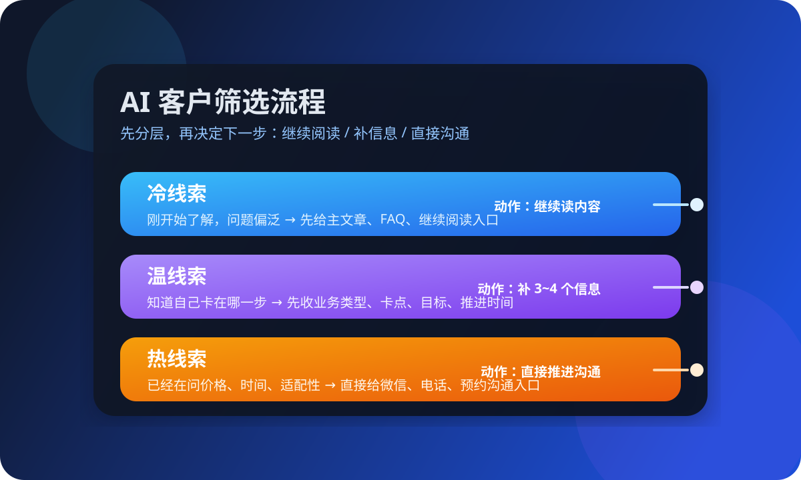

这篇先解决什么
先解决“官网有人来但不知道该先回谁”“留资有了但判断全靠感觉”“销售线索很多却没有轻重缓急”“AI 回复了一堆但没有推进动作”这几类更现实的问题，再谈更复杂的 CRM、评分模型和自动化流程。
很多人搜“AI 客户筛选怎么做”“官网咨询怎么筛选”“AI 线索筛选”，真实问题通常不是没有工具，而是网站来了咨询之后，没人知道该先看什么信息、怎么判断优先级、下一步该让对方做什么。对一人公司来说，AI 客户筛选真正值钱的地方，不是替你拍脑袋判断客户好坏，而是把有限时间留给更值得继续跟进的人，把暂时不成熟的人顺手引到更合适的内容入口。

先解决“官网有人来但不知道该先回谁”“留资有了但判断全靠感觉”“销售线索很多却没有轻重缓急”“AI 回复了一堆但没有推进动作”这几类更现实的问题，再谈更复杂的 CRM、评分模型和自动化流程。
Harris 的关键词策略强调，先判断搜索意图，再安排哪一页承接。放到官网咨询也是同一套逻辑：先看对方现在处在哪个阶段，再决定应该给什么内容、什么问题、什么下一步。Shopify 在销售漏斗里反复讲一件事：真正该修的不是表面流量，而是用户在哪一步停住、犹豫、流失。MBA 智库对销售线索和销售漏斗的解释也很直接：线索只是最前端，真正决定结果的是后面的阶段推进和持续管理。对一人公司来说，这意味着最需要的不是一套复杂评分系统，而是一套很清楚的判断顺序——先看对方来意，再看成熟度，再给下一步。只要这个顺序清楚，AI 才能帮你把时间留给更值得继续跟的人，而不是把所有咨询都平均对待。
这套分法的重点不是“准到像算命”，而是先把动作分清楚，让你知道不同线索下一步该去哪里。
这类人通常刚开始了解，问题偏泛，比如“AI 客服怎么开始”“AI 销售是不是适合我”。他还没有明确自己的业务背景和现实卡点，这时候最适合的不是立刻硬约沟通，而是给他一篇主文章、一组 FAQ，帮他先把基本判断补齐。对一人公司来说，冷线索的目标不是马上转化，而是先让他看懂你解决的到底是哪类问题。
这类人已经知道自己卡在哪，比如“官网有咨询但跟进乱”“内容有人看但没有转咨询”。他需要的不是泛介绍，而是更针对的判断。这时最适合做的，是让 AI 或表单先收 3 到 4 个信息：你现在做什么业务、当前最卡哪一步、希望先解决什么、预计什么时候推进。只要这些信息补齐，后面的人工沟通会省很多时间。
这类人已经很接近决策，比如主动问价格、时间、适不适合自己、能不能尽快聊一聊。对这类咨询，再继续让他读一堆文章，往往就是在消耗转化。更好的做法是直接给微信、电话、预约入口，并告诉他本次沟通会解决什么问题。热线索最怕不是没人回，而是回了很多却没有明确下一步。
一人公司不需要一开始就做很重的表单，先把最关键的 4 个问题问对，已经足以筛掉一大半无效来回。
这一步不是为了贴行业标签，而是为了判断对方当前的沟通背景。是做内容型业务、咨询型服务，还是本地线下承接，不同业务的官网咨询路径差别很大。先问清这个问题，后面的建议才不会飘。
是“没人来”，还是“来了没人接住”，还是“接住了但推进不动”？这个问题决定了对方应该优先看内容、FAQ，还是直接沟通方案。筛选的核心不在标签，而在当前卡点。
有人想先做 FAQ 分流，有人想先把官网咨询收上来，有人想先理顺销售跟进。只要这一步讲清楚，你给的下一步动作就会更像帮助，而不是模板回复。
这一步能帮你快速区分“先了解看看”和“现在就想推进”。不是所有咨询都要立刻转人工，但所有热线索都值得被更快看见。对一人公司来说，时间感本身就是一个很重要的筛选信号。
对一人公司来说，判断下一步比堆更多字段更重要。字段太多，往往只会让咨询中断。
冷线索还没准备好时，最适合的是继续阅读，不是被迫进入销售节奏。
有电话不等于高意向，没有电话也不代表没有价值，关键还是对方想解决什么。
真正浪费转化的，常常不是没回答，而是回答完了人还停在原地。
如果只看来了多少咨询，却不看哪些咨询真的推进，筛选体系很快会失真。
如果你现在也在做一人公司的官网、FAQ、内容入口或销售承接，可以把现状发来，我们先帮你拆成最小可执行清单。